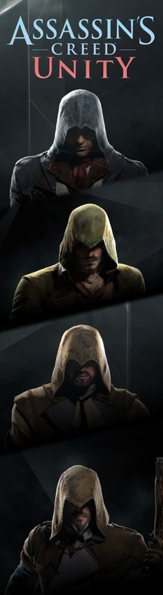
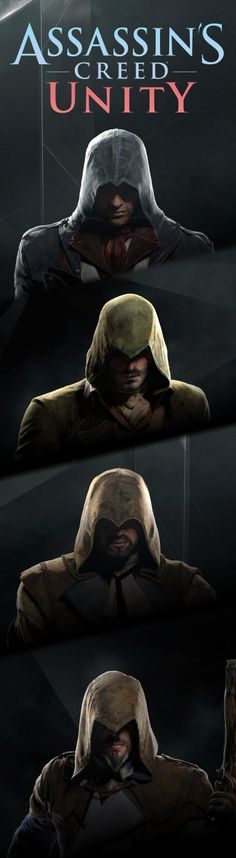

Computerspil og motivation
Skrevet af: Alexander C. Magnus - 07/10/2017
I februar 2010 holdte Jane McGonigal, en spil-designer der har lavet online spil i over 10 år, et foredrag i Talkshowet Ted Talks, der tillader almene folk at komme ud med deres idéer og oplevelser foran et stort publikum, imens de bliver optaget til hele verden at se. Her forklarer hun hvordan det at spille computer dagligt, kan gøre verden til et bedre sted. Hun kommer specifikt med 4 overordnede emner, som hun mener spil gør os rigtig gode til. De 4 emner er: Urgent Optimism, Social Fabric, Blissful Productivity, og Epic Meaning.
Urgent Optimism
Til Urgent Optimism, det første af de 4 emner, siger hun: ”Urgent optimism is the desire to act immediately to tackle an obstacle, combined with the belief that we have a reasonable hope of success” (Jane McGonigal, 2010). Altså, er det en form for ekstrem selv-motivation. Specifikt, lysten til at handle med det samme for at overkomme et problem. Lysten til at handle, blandet med håbet om at der er en chance for at det vil lykkes, gør at spillere altid ser en sejr forude, og det altid er værd at prøve, og med det samme.
Social Fabric
Social Fabric er forholdet mellem spillerne, og der menes at spillere og folk generelt, bedre kan lide hinanden, og betror os mere til personer vi har spillet med, da det tager en stor tillid til disse personer. Hun mener at selvom personen man spiller med, slår en godt og gevaldigt i spillet, er der stadig tale om en højere enhed af tillid og betroelse, da den anden person tager tid ud af sin dag for at bruge tid til at spille med en, og formentlig til spillet er slut. På den måde mener hun at man skaber et unikt bånd, og en form for samarbejde med medspilleren eller modspilleren, og får på den måde et bedre forhold til medspillere, såvel som modstandere.
Blissful Productivity
Med Blissful Productivity bliver der refereret til online spillet ”World of Warcraft”. Folk der spiller World of Warcraft spiller i gennemsnit 22 timer om ugen, hvis ikke mere. Når vi spiller et spil, er vi gladere når vi arbejder hårdt, end hvis vi slapper af i spillet. Vi har en eller anden form for drive som gør at vi i spil ikke gider at tage en slapper. Hvis vi vil se fremskidt og bedring, må man arbejde for det, og det er spillere mere end villige til, hvis de får det rigtige arbejde givet.
Epic Meaning
Spillere, og folk generelt, kan godt lide hvis de er en del af noget større. Dette kommer til mening i hendes fjerde og sidste emne: Epic Meaning. Her referere Jane til Wikipedia. “Second biggest wiki in the world, with nearly 80,000 articles, is the World of Warcraft wiki” – Jane McGonigal. World of Warcraft har den anden største Wiki, lige under den officielle, med over 80.000 artikler omhandlet spillets våben, karaktere, historie, steder osv. Der bliver bygget en kæmpe historie, og spillerne er en del af den.
Løsning
Lige nu bliver der spillet omkring 3 milliarder timer om ugen. Jane vil gerne forhøje dette tal til 21 milliarder timer. Hvis vi på samme tid finder ud af hvordan og hvorfor det er spillere har denne drive til at spille, og hvis vi evt. kan bringe denne drive ud i virkeligheden, og samtidig blive lige så fastslået på at færdiggøre et job, arbejde så hårdt, og samarbejde i spil, som vi ville gøre i virkeligheden, vil vi kunne gøre verden til et bedre sted, og løse diverse problemer verden har.
Diskussion
Jane McGonigal kommer med nogle gode argumenter hvorfor det skulle være en god ting at spille mere computer end vi allerede gør i forvejen. Dog så strider det lidt imod hvad der ellers er blevet sagt de sidste par år. Der har altid været folk for og imod computere, og mere specifikt, computerspil. Folk plejer for det meste at snakke dårligt om det at sidde hele dagen foran skærmen, og ikke lave andet end at spille computer. Hun drejer den dog helt rundt og siger at folk burde spille 7 gange så meget computer om ugen end vi allerede gør. Det første punkt der kommer op er det sociale. Det er også det der har været meget snak om de sidste par år. Folk der sidder foran computeren hele dagen, og ikke rigtig kommer ud og færdes og socialisere sig med mennesker. Selvom man kan skabe venskaber online, er det dog stadig ikke det samme som at socialisere sig uden brug af online chatting. Dog kan der findes tonsvis af artikler der både beskriver hvordan unge ikke bliver asociale af at sidde foran computeren, og tonsvis der siger det modsatte. Så uenighed, det er der. På samme tid mener mange at meget tid foran computeren gør folk usunde, medmindre man dyrker motion ved siden af. En artikel fra Videnskab.dk fra d. 23 maj 2014 ved navn ”Ubegrænset TV og computer gør børn overvægtige og dårlige i skolen”, Skriver ”klasse-børn med forældre, der ikke begrænser børnenes forbrug af fjernsyn og computerspil, har tendens til at være mere overvægtige, klare sig dårligere socialt og præstere dårligere i skolen” – Bo Christensen, Journalist, Videnskab.dk. Dette er der blevet forsket meget i, og det viser sig at punktet med mindsket sundhed er rigtig nok. Dog er der blandede meninger og eksperimenter der siger og viser at unge ikke bliver dårligere præstationsmæssigt. Dog er der nogle der vover sig helt ud og siger at det øger deres præstation i skolen. Især i sproget Engelsk. En artikel fra dr.dk/viden skriver om en svensk forskning fra Göteborg Universitet og Karlstad Universitet, der viser at unge der spiller rollespil, altså computerspil, bliver bedre til engelsk. De skriver: ”Det er netop den sprogtræning, børnene får uden for skoletiden, som er vigtigt for at videreudvikle sprogkundskaberne”. Spil som World of Warcraft er jo på engelsk, så alle de tusindvis af unge danskere der spiller spillet, bliver nødt til at lære det, og bliver kun bedre og bedre.